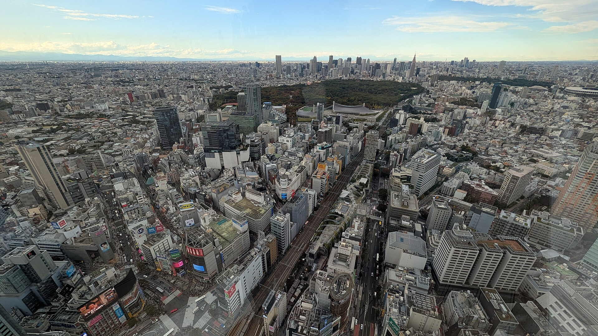
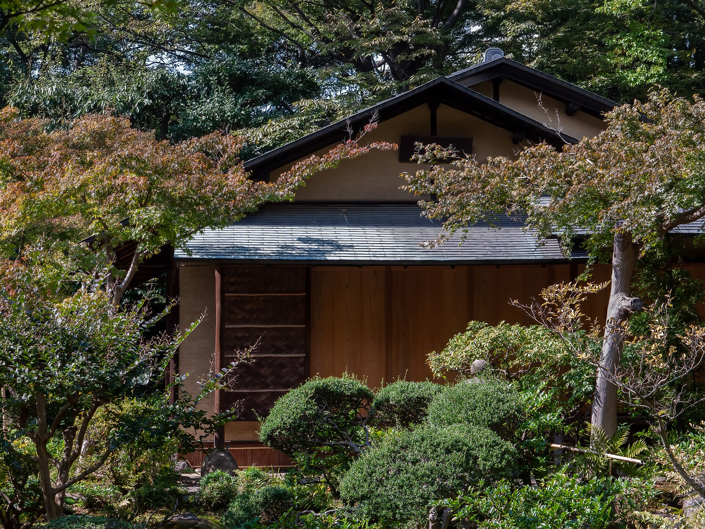
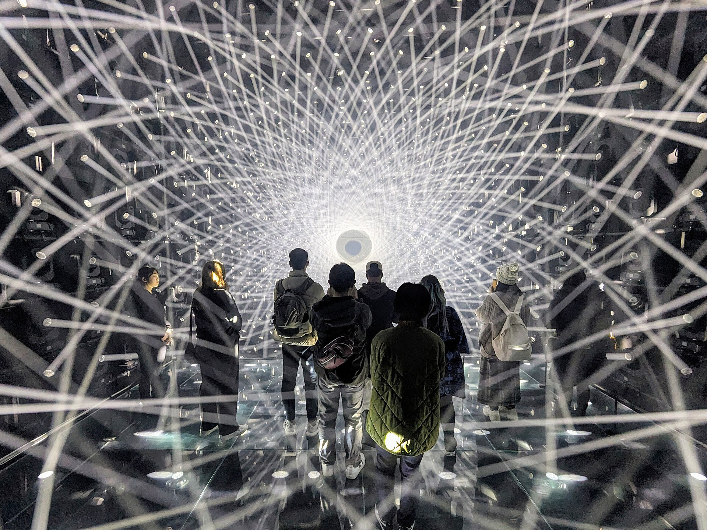
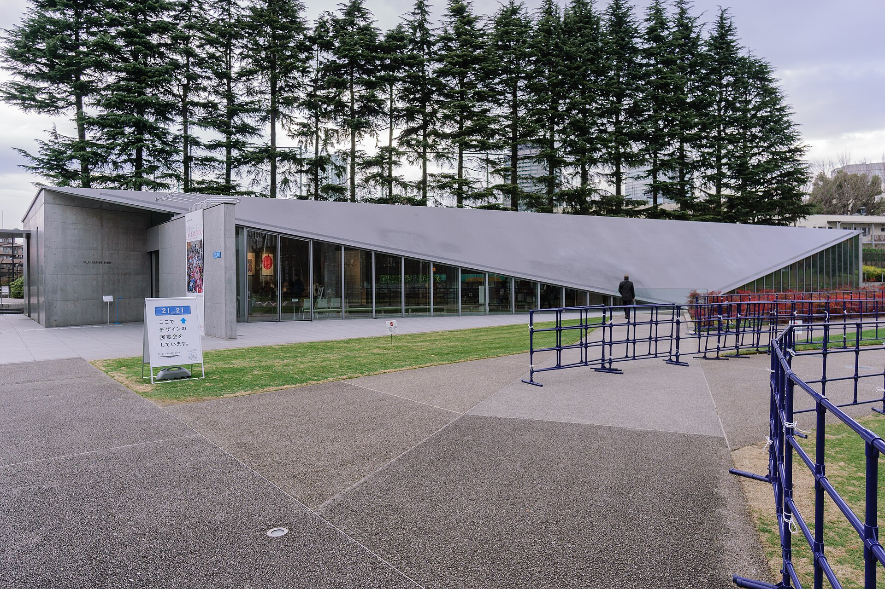

TOKYO / 2026
序章 · 出發前夜

A solitary week in Tokyo
東京
獨旅手札
把七天折進一本可以慢慢翻閱的城市展覽。秋色、建築、光與啟航，都從這一頁開始。
2026.11.18 — 11.25
也可以向左滑動翻頁


11.20麻布台 Hills · 光成為可行走的空間
03 / Borderless
在沒有邊界的光裡，
失去時間
08:30 teamLab Borderless 第一場。讓影像主導，不急著記錄；11:15 逛麻布台並午餐，13:00 再走向 21_21 DESIGN SIGHT，把感官收束成設計。

21_21 DESIGN SIGHT
把安藤忠雄的低矮屋頂，當成前往城市高處之前的伏筆。
04 / Nov. 20 · PM
從地面設計，
走到城市天際
13:00 六本木的設計午後，接上 15:20–15:40 SHIBUYA SKY 夕陽入場時段。這張票是整趟行程的第一順位。
Priority 01SHIBUYA SKY · 建議鎖定日落前入場
06 / Nov. 21
城市停靠，
海上旅程開始
退房後移動至橫濱，吃一頓不匆忙的午餐，再前往 MSC Check-in。今天的重點不是排滿，而是準時、從容地啟航。
田端退房 · 再確認行李
橫濱午餐 · 預留港區移動時間
MSC Check-in · 啟航
Appendix A
先把期待，
換成票券
勾選內容會保存在這台裝置。購票順序已依行程風險排列。
PRIORITY 01
PRIORITY 02
PRIORITY 03
PRIORITY 04
Appendix B
留給旅途的
空白頁
臨時想到的店、想帶走的東西，或只屬於自己的小提醒。
內容會自動保存在這台裝置
照片：Hiroaki Kaneko、Reinhold Möller (Ermell)、Joli Rumi（CC BY-SA 4.0）、DannyWithLove、Wikimedia Commons。查看完整來源與授權。